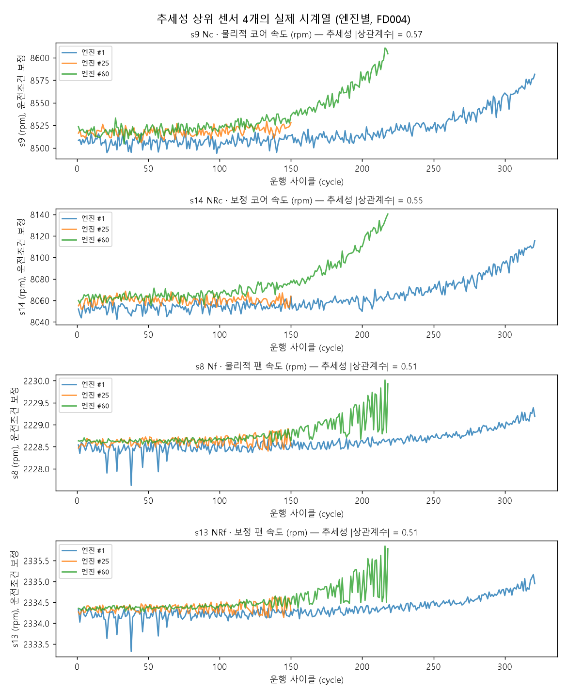
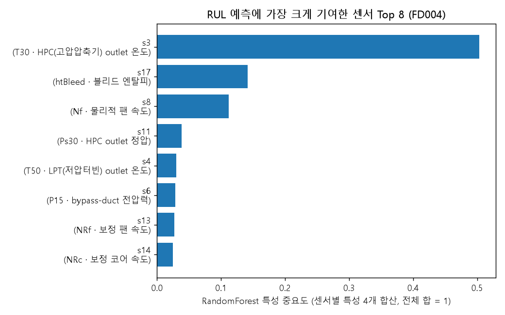
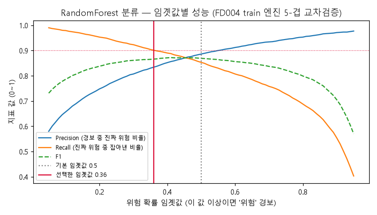
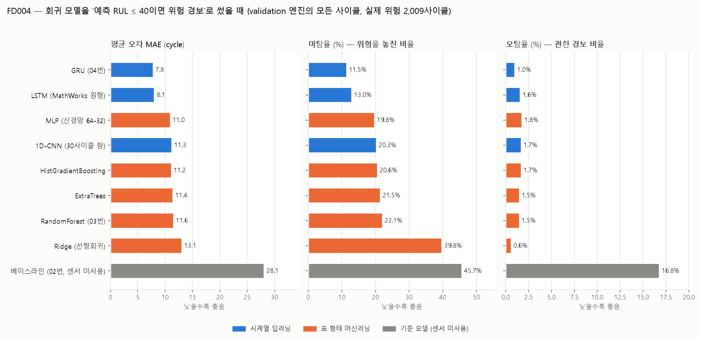
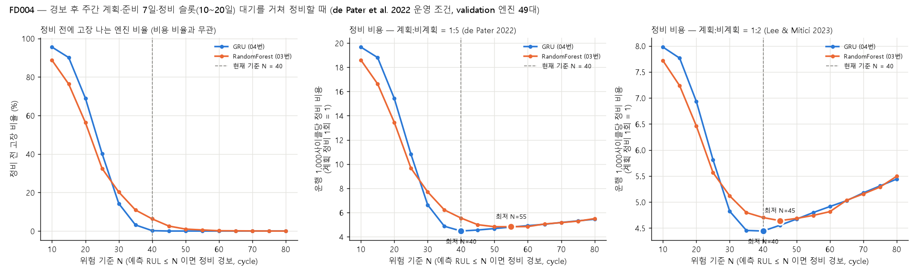
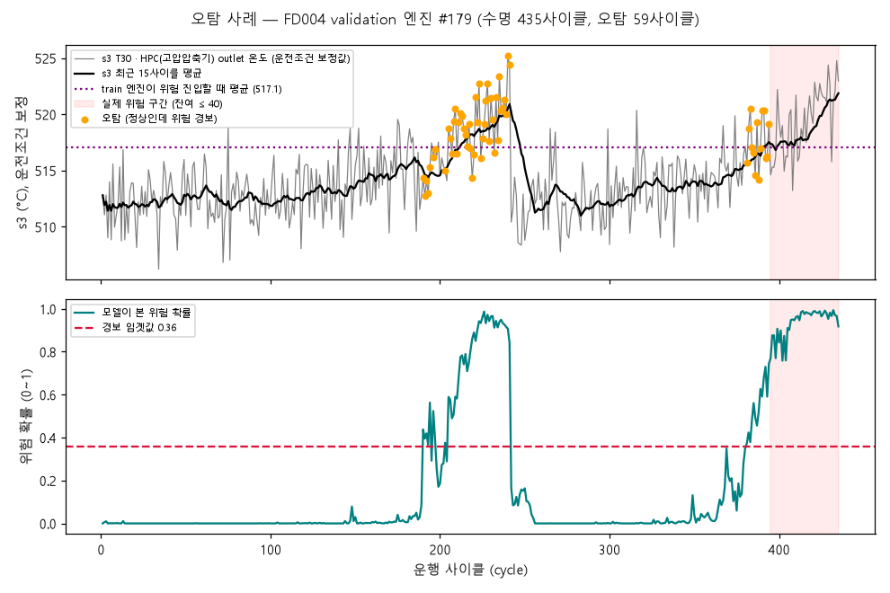
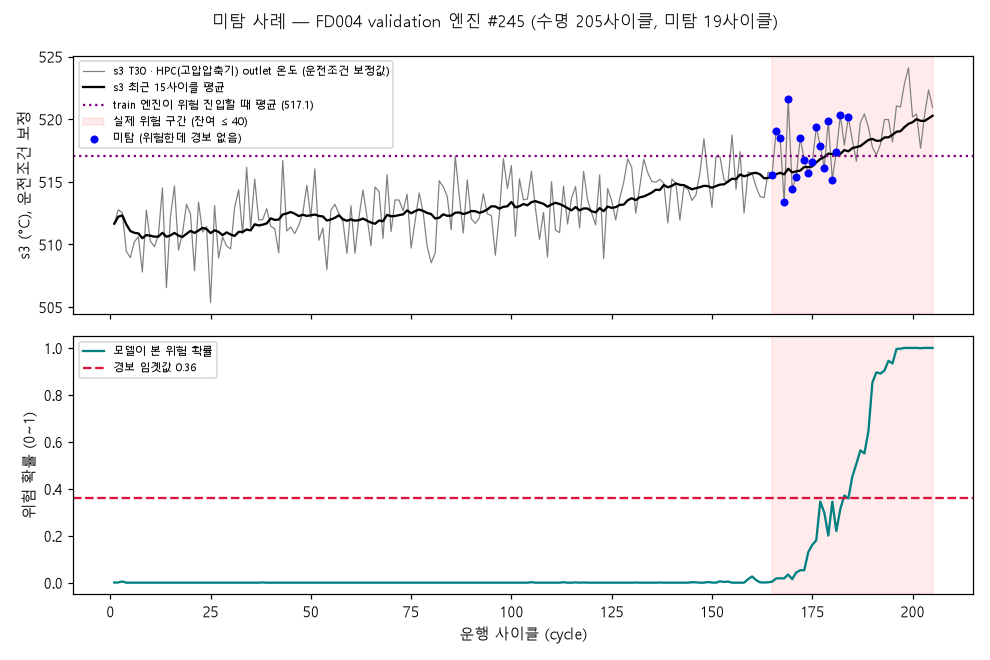
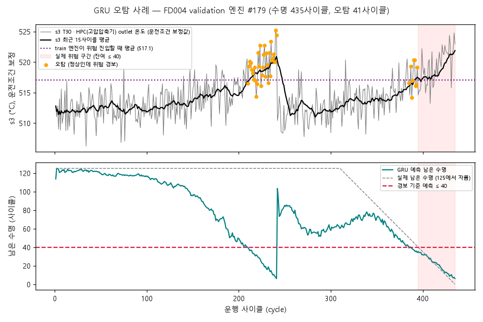
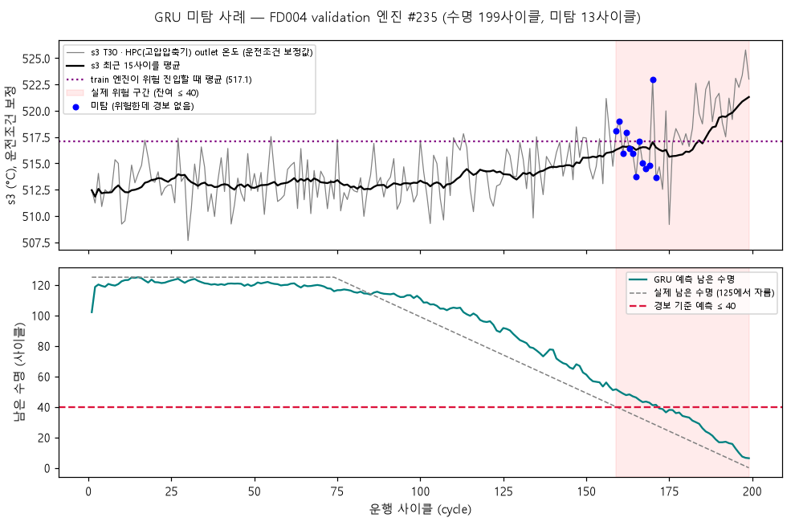

온도·압력·회전속도로 앞으로 몇 번 더 비행할 수 있는지 예측하고, 고장 전 계획 정비로 긴급 정비 비용을 줄일 수 있는지 확인
정상 · 80사이클 이상
주의 · 40~80
위험 · 40 이하
고장
왼쪽 → 오른쪽: 운행 사이클 누적 · 1사이클 = 엔진 1회 운행 · 한 행 = 해당 시점의 운전조건·센서값
왜 중요한가2~5배
계획 정비보다 비싼 긴급 정비 비용
문헌 비용 비율 1:5¹ / 1:2² 미리 알면 계획 정비로 전환
필수 과제 · 이진 분류
지금 위험한가?
남은 수명 40 이하 → 위험으로 정의·경보
선택 과제 · RUL 회귀
몇 사이클 남았나?
남은 수명을 숫자로 예측 → 정비 비용으로 환산·비교
¹ de Pater, Reijns & Mitici (2022), Reliability Engineering & System Safety 221, 108341 — 비용 1:5 ² Lee & Mitici (2023), Reliability Engineering & System Safety 230, 108908 — 비용 1:2
Sentinels · 5조
① 문제 정의
두 담당자의 우선순위: 비용과안전
재무 담당자: 비용 최우선 · 정비 담당자: 안전 최우선 · 가상 시나리오
재무 담당자
비용 최우선
목표
총 정비 비용 최소
제약
주간 계획 정비 준비 7일 이상
안전 하한 · 가정
정비 전 고장 엔진 1% 이하
정비 담당자
안전 최우선
목표
위험 엔진을 놓치지 않기
제약
조기 정비로 늘어나는 비용은 감수
안전 하한 · 가정
공식 test 놓침 0대
Sentinels · 5조
② 데이터 이해 · 전처리
사용한 데이터 파일과 참고 문헌
NASA C-MAPSS 터보팬 엔진 열화 시뮬레이션 데이터 · 2개 세트(FD004, FD001), 파일 6개
데이터 파일
파일
행
엔진
용도
train_FD004
61,249
249대
학습 200대 + 검증 49대
test_FD004
41,214
248대
공식 test 평가
RUL_FD004
248
248대
test 정답(남은 수명)
train_FD001
20,631
100대
교차 검증 (비교용)
test_FD001
13,096
100대
RUL_FD001
100
100대
train·test는 26열: 엔진 번호 1 + 사이클 1 + 운전 설정 3 + 센서 21 (RUL 파일은 1열) · 실제 항공사 데이터가 아닌 시뮬레이션 데이터 · 내려받은 곳: NASA PCoE 데이터 저장소(Turbofan Engine Degradation Simulation)
참고 문헌과 쓴 곳
자료
사용한 내용
Saxena 외 (2008), PHM 2008 Damage Propagation Modeling for Aircraft Engine Run-to-Failure Simulation
데이터 출처, 센서 이름·단위, NASA 점수
de Pater, Reijns & Mitici (2022) Reliability Eng. & System Safety 221, 108341
정비 준비 7일, 정비 슬롯 10~20일, 주간 계획, 비용 1:5
Lee & Mitici (2023) Reliability Eng. & System Safety 230, 108908
비용 1:2, 정비 준비 시간
MathWorks Sequence-to-Sequence Regression Using Deep Learning
RUL 상한(125로 조정), Z-score, 순환 신경망 구조
MathWorks Similarity-Based RUL Estimation
운전조건별 정규화, 센서 추세성
Sentinels · 5조
② 데이터 이해 · 전처리
한 행 = 엔진 한 대의 한 번의 운행
엔진 #1 · 운전 조건 6가지 첫 등장
61,249train 행 · 엔진 249대
41,214test 행 · 엔진 248대
비행 조건 (엔진 밖)
팬
고압 압축기 (HPC)
엔진
사이클
고도
마하수
스로틀
s8 팬 속도
s3 출구 온도 (°C)
s7 출구 압력
1
1
42.00
0.840
100
2211.86
473.2
137.36
1
2
20.00
0.700
100
2323.66
547.7
332.10
1
5
25.01
0.621
60
1915.22
424.2
174.82
1
6
35.00
0.840
100
2222.77
478.4
193.82
1
7
0.00
0.000
100
2387.92
606.6
552.45
1
17
10.00
0.251
100
2318.69
551.6
392.76
고장 모드 ①s8 · 팬 속도팬 열화
고장 모드 ②s3 · 출구 온도s7 · 출구 압력고압 압축기(HPC) 열화
엔진 정보 2열
엔진 번호 · 사이클
운전 설정 3열
고도 · 마하수 · 스로틀
센서 21열 → 15개 사용
거의 변하지 않는 6개(s1·s5·s10·s16·s18·s19) 제외
※ 이 데이터는 NASA C-MAPSS 시뮬레이션 데이터입니다 (실제 항공기 운항 기록이 아님)
Sentinels · 5조
② 데이터 이해 · 전처리
전처리 4단계: 점검 → 라벨 → 스케일링 → 분할
1
데이터 점검
0개결측값 · 중복 행
train · test 모두 확인
엔진별 사이클이 1씩 연속 채우거나 지울 데이터 없음
2
정답 라벨
마지막 사이클 − 현재 사이클
고장까지 남은 수명 (RUL)
125남은 수명 상한
새 엔진의 미미한 변화와 가장 짧은 수명을 고려
3
스케일링
운전조건별 표준화
Z-score (값 − 평균) ÷ 표준편차
스케일링 5가지 × 모델 3개 비교
14.4 → 11.8
RandomForest 검증 오차
4
엔진 단위 분할
train 249대 · 80:20
200학습
49검증
엔진 통째로 분할 분할 시드 42
공식 test 248대모델·설정 확정 후 최종 평가
표준화 기준도 학습 200대로만 계산
엔진별로 분리하고, 학습 엔진으로만 표준화 기준 계산 → 데이터 누수 방지
Sentinels · 5조
③ 시계열 패턴 분석
같은 센서도 엔진마다 변화 양상이 다릅니다

초반: 3대 구분 불가
엔진마다 다른 시점에 상승
그림 읽는 법
엔진 #1 (수명 321)
엔진 #25 (수명 150)
엔진 #60 (수명 약 218)
초반: 3대의 값이 겹침
엔진마다 다른 시점에 상승
센서 s9, s14 (운전조건 보정값)
그림에서 보이는 것
초반 고장 한참 전까지 엔진 3대의 값이 겹침
상승 시점 #60은 약 150사이클, #1은 200 이후. #25는 뚜렷한 상승 없이 150에서 고장
상관계수0.51~0.57직선 상관 |r| (1이면 완벽한 직선)
기준 모델 오차47.4평균 수명 − 현재 사이클 기준 모델의 평균 오차(사이클)
그래서 추세선만으로는 열화 패턴을 잡을 수 없습니다
평평하다가 고장 직전에 가속하는 비선형 패턴 → 최근 15사이클의 변화(평균·표준편차·기울기)를 함께 봐야 함
Sentinels · 5조
③ 시계열 패턴 분석
센서 값을 최근 변화를 담은 특성으로 바꿉니다
1
특성 만들기
센서의 최근 15사이클에서 3가지를 계산
현재값 8,582(점)
평균 8,570(점선)
표준편차 6.2(회색 띠)
기울기 +1.3/사이클 (파란 선)
센서 1개 → 특성 4개 센서 15개 → 특성 60개
2
구간 길이 정하기
평균 · 표준편차 · 기울기를 최근 몇 사이클로 계산할지 비교
(RandomForest, validation 오차)
구간(사이클)
모든 행
고장 직전
5
10.92
4.74
10
11.18
5.27
15 (사용)
11.04
5.51
20
10.77
5.44
30
9.46
6.35
고장 직전 = 엔진 마지막 사이클의 오차 · 분할 2가지 평균
구간이 길수록 위험 분류 F1 상승 15 → 0.875, 30 →
0.899
3
중요한 센서 확인
RandomForest가 가장 많이 참고한 센서

센서별 특성 4개 합산, 전체 합 = 1
상위 8개 중 5개가 추세성 상위와 겹침
(s8·s11·s13·s14·s17) 1위 s3 고압 압축기 출구 온도,
팬 속도 s8도 상위
구간 15의 근거
①최단 엔진 수명(125)을 고려한 절충값
②RandomForest는 모델 비교의 후보이자 센서 중요도 확인용 — 최종
모델 선정 시 후순위 결과값
Sentinels · 5조
④ 기준 모델 · 머신러닝
필수 과제 위험 분류: "지금 위험한가?"
1
정답 라벨 만들기
남은 수명 40 이하 = 위험(1), 그 외 = 정상(0)
2
입력 만들기
센서 15개 → 특성 60개 (현재값·평균·표준편차·기울기)
3
모델 학습·비교
기준 모델 점수 규칙머신러닝 4종 RF 포함
같은 엔진 분할(학습 200 / 검증 49대)·같은 입력으로 비교
4
경보 기준 정하기
위험 확률 0.36 이상이면 경보 (기본 0.5에서 낮춤)
5
평가
혼동행렬 · 정밀도 · 재현율 · F1 (공식 test는 다음 슬라이드)

왜 0.36인가
기본값 0.5에서 낮춤: 위험을 놓치지 않는 것을 우선
학습 엔진 5-겹 교차검증에서 위험을 90% 이상 잡는 값 중 헛경보가 가장 적은 값
검증·test 엔진은 기준을 정하는 데 쓰지 않음
선정 근거: 분류 후보 비교
모델
정밀도
재현율
F1
보정 오차
RandomForest
0.84
0.89
0.86
0.008
HistGradientBoosting
0.85
0.88
0.86
0.018
LogisticRegression
0.84
0.86
0.85
0.013
기준 모델 (Z-score)
0.57
0.60
0.58
-
IsolationForest*
0.68
0.83
0.74
-
validation 49대 · 같은 경보 기준 0.36 · 튜닝 없음 · 보정 오차 = 예측 확률과 실제 위험 비율의 차이(낮을수록 좋음) · *점수 기준(확률 없음) · 성능은 동급 → 권장 모델이고 중요도 해석이 쉬운 RF를 대표로 사용
Sentinels · 5조
④ 기준 모델 · 머신러닝
왜 머신러닝(RandomForest)이 필요한가?
최종 평가: 공식 test 248대 (모델과 경보 기준을 확정한 뒤 엔진별 마지막 관측 시점에 적용)
공식 test F1
기준 (Z-score)
0.59
RandomForest (0.36)
0.92
F1 (0~1, 높을수록 좋음)
재현율 · 정밀도 (95% 신뢰구간)
모델
재현율
정밀도
기준 (Z-score)
0.55 (0.43–0.66)
0.63 (0.51–0.74)
RandomForest
0.94(0.86–0.98)
0.89(0.80–0.94)
위험 엔진이 69대뿐이라 구간이 넓음 · 재현율 구간이 겹치지 않아 차이는 확실
기준 모델 (Z-score)
경보 (위험 예측)
경보 없음
실제 위험
잡아냄 TP
38
놓침 FN
31
실제 정상
헛경보 FP
22
정상 맞춤 TN
157
RandomForest (0.36)
경보 (위험 예측)
경보 없음
실제 위험
잡아냄 TP
65
놓침 FN
4
실제 정상
헛경보 FP
8
정상 맞춤 TN
171
공식 test 혼동행렬 (248대, 위험 = 남은 수명 ≤ 40: 위험 69대, 정상 179대)
위험 69대 중 65대 탐지 (재현율 94%) · 놓침 4, 헛경보 8
0.36은 test를 보기 전에 정한 값 · 0.5였다면 놓침 7, 헛경보 6 → 3대를 더 잡고 헛경보 2건 감수
Sentinels · 5조
④ 기준 모델 · 머신러닝
선택 과제 남은 수명(RUL) 예측: "몇 사이클 남았나?"
1
정답 라벨 만들기
총 사이클 − 현재 사이클 = 고장까지 남은 사이클 수 (예:
총 200, 지금 150 → 50) 125에서 자름 (가장 짧은 엔진 수명
고려)
2
후보 8종 비교
RidgeRandomForestExtraTreesHistGBMLP1D-CNNLSTMGRU
같은 엔진 분할·같은 지표로 validation에서 비교
3
최종 모델 선정
GRU
평균 오차 최저 · 시드 3회 반복도 GRU 우세
4
평가
MAE 평균 오차RMSE 큰 오차에 민감NASA 점수 늦은 예측에 벌점
공식 test에서 기준 모델·RandomForest·GRU(아래)를 세 지표로 비교
기준 모델 센서 사용 안 함
평균 수명 − 현재 사이클
단순 규칙으로 남은 수명 계산
RandomForest 회귀 입력: 특성 60개
한 시점의 특성 60개 → 남은 수명 숫자
GRU 회귀 입력: 센서 15개의 기록
GRU = 기록을 순서대로 읽으며 기억할 것과 잊을 것을 스스로 조절하는 시계열용 신경망 → 지금까지의 변화 흐름으로 남은 수명 예측
Sentinels · 5조
④ 기준 모델 · 머신러닝
남은 수명 예측 오차 47 → 17 사이클
공식 test 평균 오차 (MAE)
기준 모델
47.4
RandomForest
21.8
LSTM
18.7
GRU (최종)
17.3
MAE (사이클, 낮을수록 좋음) · 기준 모델 = 평균 수명 − 현재
사이클
0%기준 모델 대비 오차 감소
25.2RMSE · NASA 점수 4,165

후보 8종 비교 (validation): 평균 오차(MAE) · 미탐율 · 오탐율 · 파란 테두리 = GRU(최종)
오차가 작은 모델일수록 미탐율도 낮습니다 (상관 0.87).
반면 오탐율은 오차와 거의 무관.
FD004 논문 비교표의 CNN·LSTM(2017년 기준선)은
RMSE 30.7·30.3, NASA 점수 14,334·11,771 → GRU
25.2 · 4,165
다른 논문의 CNN·CNN-LSTM은 RMSE 25.8·26.7로 비슷했지만, NASA
점수 9,883·11,124는 GRU의 2배 이상
출처
Akbari Pour et al. (2025), arXiv:2511.04723, Table 5 ·
He et al. (2024), arXiv:2411.00461, Table II —
논문별 전처리·구간 길이가 달라 참고용 비교
Sentinels · 5조
⑤ 평가 · 오류 분석
왜 위험 기준 사이클을 40으로 정했을까?
경보 → 주간 계획 회의(0~6일 뒤) → 정비 준비 최소 7일 →
정비 가능한 날까지 대기(10~20일 간격) = 경보 후 정비까지
평균 17사이클 (1일 = 1사이클)

14.3%0.2%+48%최저+2% / +5%최저
FD004, validation 엔진 49대, 정비 비용 시뮬레이션 (de Pater 외 2022
운영 조건 · 비용 1:5, 1:2 모두 최적 N = 40)
0%기준 40 정비 전 고장 엔진 비율 비용이 가장 낮음
0%기준 30 정비 전 고장 엔진 비율 비용도 +48%
+2%
/ +5%기준 45 / 50 40보다 늘어나는 비용 지나치게 일찍 정비해서
출처
de Pater, Reijns & Mitici (2022), Reliability Engineering
& System Safety 221, 108341 — 정비 준비 7일 · 정비 가능한 날
10~20일 간격 · 주간 계획 · 비용 1:5
Lee & Mitici (2023), Reliability Engineering & System
Safety 230, 108908 — 비용 1:2
Sentinels · 5조
⑤ 평가 · 오류 분석
RF 오탐 사례 — 엔진 #179: 수명이 충분한데 경보
RF 분류(위험 확률 ≥ 0.36) · validation 엔진 #179 (수명 435사이클, 헛경보 59사이클)

1
1
1안전한데 경보 45사이클
2
2241번째 전후 센서가 한꺼번에 정상으로
3
3위험 직전 14사이클
상황① ③ 안전한 구간에서 경보
남은 수명 194~245 (안전)에서 45사이클 경보 마지막 위험 직전(남은 수명 41~54)에서도 14사이클
원인② 센서가 한꺼번에 정상으로
운행 241번째 전후로 모든 센서가 정상 수준으로 되돌아감 되돌아가기 전에는 온도가 실제로 위험 엔진 수준 → 모델 입장에서는 합리적인 경보
시사점정비 이력이 필요
정비 후 회복과 구분하려면 정비 이력 데이터 필요 같은 모양의 엔진이 학습 데이터에 3대 (#71 · #179 · #185)
모델 실수만이 아니라 데이터의 한계 — 중간 정비로 보이는 모양은 정비 이력이 있어야 구분
Sentinels · 5조
⑤ 평가 · 오류 분석
RF 미탐 사례 — 엔진 #245: 위험 구간인데 경보가 늦음
RF 분류(위험 확률 ≥ 0.36) · validation 엔진 #245 (수명 205사이클, 놓침 19사이클)

1
1
1위험 구간 20사이클: 경보 1회
2s3가 평균보다 낮음
3
3확률이 0.36을 넘는 시점부터 경보
상황① ③ 위험 구간인데 경보 거의 없음
남은 수명 40~21 (20사이클) 중 19사이클 경보 없음 (22에서 1회만 울림)
원인② 낮은 온도에서 고장
위험 구간 진입 때 s3 온도가 다른 엔진 평균(517°C)보다 낮았음 → 낮은 온도에서 고장 나는 개체
영향정비 준비에 늦을 수 있음
고장 약 20사이클 전에는 경보가 울려 완전한 누락은 아님 다만 정비 준비(7~32사이클)에는 늦을 수 있음
개선 방향: 센서의 절대값 대신 엔진별 초기 상태 대비 변화량을 특성으로
적용 결과 · RF: 이 엔진 놓침 19 → 5사이클, 전체 헛경보 337 → 378 · GRU: 놓침 6 → 0, 헛경보 엔진 10 → 29대, 검증 오차 7.8 → 11.0 결론: 이 엔진은 좋아지지만 다른 엔진 오류가 늘어 전체 성능은 개선되지 않음 → 현재 모델 유지
Sentinels · 5조
⑤ 평가 · 오류 분석
GRU 오탐 사례 — 엔진 #179: RF와 같은 엔진에서 경보
GRU(예측 남은 수명 ≤ 40이면 경보) · validation 엔진 #179 (수명 435사이클, 헛경보 41사이클)

1
1
1안전한데 경보 32사이클
2
2예측이 6 → 100으로 급변
3
3위험 직전 9사이클
상황① ③ 안전한 구간에서 경보
남은 수명 194~225 (안전)에서 32사이클 경보 위험 직전(41~50)에서도 9사이클 (RF 분류는 45 + 14 = 59사이클)
원인② 센서가 정상으로 돌아감
241번째 전후로 센서가 정상 수준으로 돌아가며 예측이 6까지 떨어졌다가 약 100으로 복귀 RF와 같은 엔진, 같은 모양
시사점기준만 올려서는 해결 안 됨
경보 기준을 40 → 45로 올리면 이 엔진의 헛경보는 41 → 55사이클로 늘어남 정비 이력이 있어야 구분
모델이 달라도 같은 엔진에서 헛경보 — 모델이 아니라 데이터(정비 이력 없음)의 한계
Sentinels · 5조
⑤ 평가 · 오류 분석
GRU 미탐 사례 — 엔진 #235: 예측이 길어 경보가 늦음
GRU(예측 남은 수명 ≤ 40이면 경보) · validation 엔진 #235 (수명 199사이클, 놓침 13사이클)

1
1
1위험 구간 13사이클: 경보 없음
2
2예측이 실제보다 약 11사이클 길음
3
3172번째에 경보 시작
상황① ③ 위험 구간인데 경보 없음
남은 수명 40~28 (위험) 13사이클 동안 경보 없음 (159~171번째) 경보는 172번째부터 시작
원인② 예측이 실제보다 김
위험 구간에 들어설 때 GRU 예측 51.5 vs 실제 40 이 엔진의 s3 온도는 평균(517°C)보다 약간 낮은 516°C
영향정비 준비에 늦을 수 있음
정비 준비(7~32사이클)에 늦을 수 있음 경보 기준을 40 → 45로 올리면 이 엔진의 놓침은 13 → 7사이클
경보 기준을 올리면 놓침은 줄지만 헛경보가 늘어남 — 경보 기준 5가지 안 비교 참고
Sentinels · 5조
⑤ 평가 · 오류 분석
터보팬 엔진 고장 예측 분석 결과
1. 목적: 경보 기준 5가지 안 비교 — 기준을 올릴수록 놓침은 줄고 헛경보·비용은 늘어남, 운영 우선순위에 맞는 안을 선택
2. 지표: 놓침·헛경보 = 공식 test (위험 69대·안전 179대) · 정비 전 고장·비용·낭비 = validation 49대 정비 시뮬레이션 (비용 1:5)
안
방식 · 경보 기준
놓침 (대)
헛경보 (대)
정비 전 고장
정비 비용
평균 낭비*
장점 ＋ / 단점 －
A
GRU ≤ 40 비용 최우선
8
1
0.19%
4.47
26
＋ 비용 최저·헛경보 최소 － 놓침 8대
B
GRU ≤ 42 절충
3
3
0.09%
4.50 (+0.7%)
28
＋ 놓침 8 → 3, 비용 거의 그대로 － 최적이라 단정 어려움
C
GRU ≤ 46 안전 최우선 (놓침 0 최소값)
0
5
0.00%
4.57 (+2.2%)
33
＋ 놓침 0, 정비 전 고장 없음 － 헛경보 5대, 비용 증가
D
RF 분류 ≥ 0.36 RF 현재 설정
4
8
1.3%
4.82 (+7.8%)
33
＋ 놓침 4대 － 헛경보 8대, 비용 높음
E
RF 분류 ≥ 0.10 RF 놓침 0 (최대 기준)
0
22
0.00%
6.14 (+37%)
89
＋ 놓침 0 － 헛경보 22대, 비용·낭비 큼
* 낭비 = 정비 시점에 아직 남아 있던 평균 수명(사이클) · 비용 = 운행 1,000사이클당, 계획 정비 1회 = 1 · C·E는 test 놓침 0이 되는 가장 느슨한 기준
Sentinels · 5조
⑥ 현장 활용 · 한계 · 개선
SWOT 분석
SSTRENGTH 강점
예측을 비용·안전으로 비교해 정비 판단까지 연결
경보 기준 5안을 비용·놓침·헛경보로 비교하고, 비용·안전 우선안을 결재 흐름·대시보드로 연결
WWEAKNESS 약점
실제 정비 이력 없이 시뮬레이션에 의존
사이클 = 비행 1회 가정 (실제 하루 약 5회)
엔진 #179는 모든 모델이 오탐
OOPPORTUNITY 기회
우리나라 환경이 기준을 바꾼다
국내 항공사 운행 횟수 하루 1.9~6.1회
국내 여름 평균 기온 25°C·습도 84%, 공공 기상 API로 확장
TTHREAT 위협
운영 조건 변화에 따른 정비 기준의 불확실성
항공사별 정비 비용과 운항 중단 손실에 따라 유리한 경보 기준이 달라짐
미탐을 줄이기 위해 경보 기준을 높이면 헛경보와 조기 정비 비용이 증가
W × O정비 이력·비행 일시 확보 → 운항 횟수·공항 날씨 반영
S × T경보 5안·시나리오로 가정 비용 변화의 영향 확인
Sentinels · 5조
⑥ 현장 활용 · 한계 · 개선
W × O ① 운항 횟수·날씨를 반영하면
약점(하루 1회 가정, 날씨 정보 없음)을 기회(국내 운항·날씨 공공데이터)로 보완 · 공공데이터로 본 국내 현실